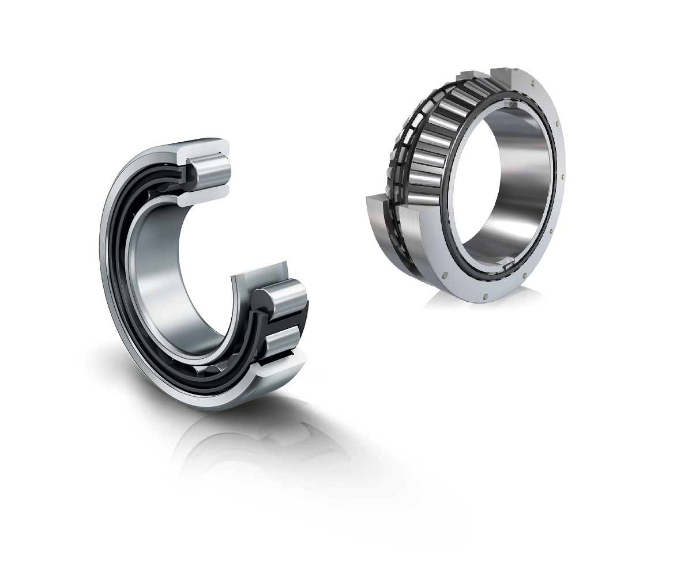

<ng-container *transloco="let t; read: 'bearing'">
  <div
    *ngrxLet="bearingSelectionType$; let selectionType"
    class="flex h-full max-w-full flex-col"
  >
    <schaeffler-subheader
      class="-ml-4"
      [showBackButton]="true"
      [subheaderTitle]="t('title.main')"
      [hideLine]="true"
      (backButtonClicked)="navigateBack()"
    >
      <ng-container subheaderBlockContent> {{ t('title.sub') }} </ng-container>
    </schaeffler-subheader>
    <div class="container mx-auto py-4 md:max-w-2xl">
      <div class="mb-5 text-center md:text-right">
        <button
          mat-button
          color="primary"
          [disableRipple]="true"
          (click)="toggleBearingSelectionType(selectionType)"
        >
          {{
            t(
              selectionType === bearingSelectionType.AdvancedSelection
                ? 'bearingSelection.button.quickSelection'
                : 'bearingSelection.button.advancedSelection'
            )
          }}
        </button>
      </div>
      <ga-advanced-bearing-selection
        *ngIf="
          selectionType === bearingSelectionType.AdvancedSelection;
          else quick_bearing_selection
        "
      ></ga-advanced-bearing-selection>
      <ng-template #quick_bearing_selection>
        <ga-quick-bearing-selection></ga-quick-bearing-selection>
        
      </ng-template>
    </div>
  </div>
</ng-container>
